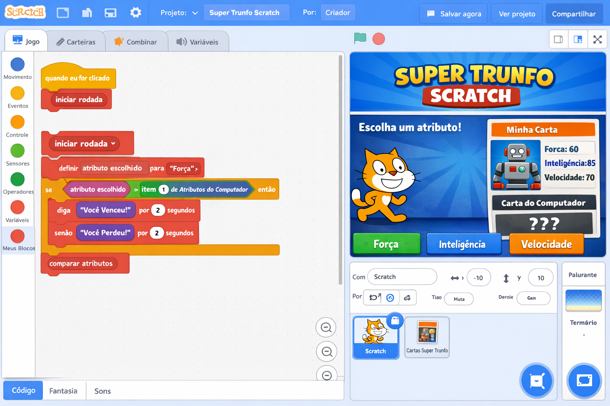
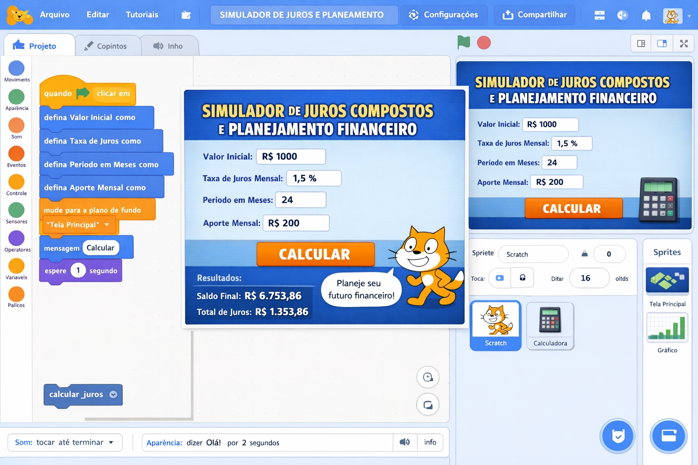
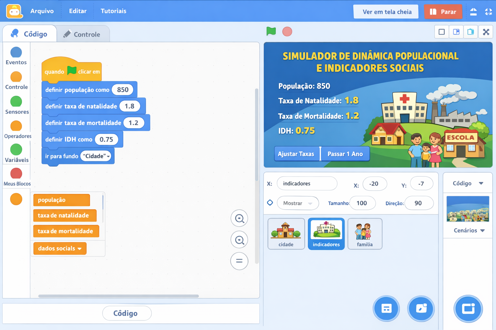
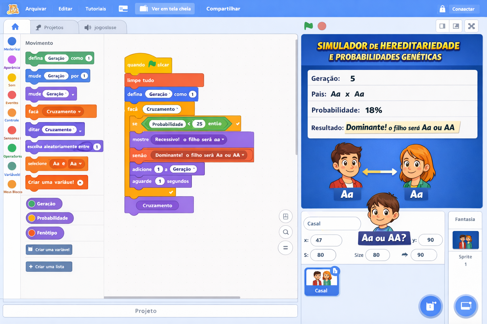

Projetos Didáticos - 9º Ano
Super Trunfo, Matemática, Geografia e Ciências: estruturas de dados e algoritmos
🃏 PROJETO 9º ANO: "SUPER TRUNFO SCRATCH"
Descrição do Projeto
Os alunos criarão uma versão do jogo Super Trunfo, onde cada carta possui atributos (ex.: força, inteligência, velocidade). O jogador enfrenta o computador, escolhendo um atributo para comparar. O projeto utiliza listas para armazenar as cartas e blocos personalizados (Meus Blocos) para organizar a lógica de comparação. É o projeto mais complexo da sequência, servindo como ponte para linguagens textuais como Python.

Objetivos de Aprendizagem
- Cognitivos: Compreender o uso de listas como estrutura de dados, aplicar algoritmos de comparação, desenvolver pensamento abstrato.
- Técnicos: Criar e manipular listas, utilizar blocos personalizados (procedimentos), implementar lógica de jogo com múltiplas condições.
- Socioemocionais: Trabalhar em equipe, discutir estratégias de jogo, refletir sobre a transição para linguagens textuais.
📚 Alinhamento com a BNCC e DCE-PR
- EF09MA10 – Resolver problemas envolvendo probabilidade (pode ser aplicado no sorteio de cartas).
- EF09LP26 – Produzir textos digitais (instruções, regras do jogo).
- Competência Geral 5 – Cultura Digital: compreender e criar tecnologias digitais.
- Competência Geral 4 – Comunicação: utilizar diferentes linguagens para expressar ideias.
Passo a Passo do Projeto
Fase 1: Planejamento das Cartas (1 aula)
Atividade: Em grupos, os alunos definem o tema das cartas (ex.: animais, carros, personagens) e criam pelo menos 6 cartas, cada uma com 3 atributos numéricos. Exemplo:
carta1: "Leão, 8, 7, 9"
carta2: "Águia, 6, 9, 8"
carta3: "Tubarão, 9, 6, 7"
etc.
Os atributos podem ser: Força, Inteligência, Velocidade. Os alunos devem definir o valor mínimo e máximo.
Fase 2: Implementação no Scratch (3 aulas)
Preparação: Criar as listas nomes, atributo1,
atributo2, atributo3 ou uma única lista com os dados. Optamos por
listas separadas para facilitar o acesso.
1. Criando as listas e preenchendo com os dados das cartas:
2. Sorteio de cartas (jogador e computador):
3. Bloco personalizado "comparar atributo":
Repetir para os outros atributos.
4. Lógica principal do jogo:
5. Fim do jogo (após 5 rodadas):
Fase 3: Ponte para Python (1 aula)
Após o projeto pronto, o professor apresenta uma versão simples do mesmo jogo em Python, destacando as semelhanças e diferenças:
Scratch (bloco personalizado)
definir comparar (atributo) entre (carta1) e (carta2)
se <(atributo) = [força]> então
se <(item (carta1) de [força]) > (item (carta2) de [força])> então
retorne [1]
...
Python (função)
def comparar(atributo, carta1, carta2):
if atributo == "força":
if carta1["força"] > carta2["força"]:
return 1
elif carta1["força"] < carta2["força"]:
return 2
else:
return 0
...
Os alunos devem identificar os elementos equivalentes: listas (arrays), blocos personalizados (funções), condicionais e operadores. Essa discussão ajuda a desmistificar a transição para linguagens textuais.
Rubrica de Avaliação
- ✅ Estrutura de Dados (2 pontos): Uso correto de listas para armazenar as cartas.
- ✅ Blocos Personalizados (2 pontos): Criação de blocos para comparar atributos e organizar o código.
- ✅ Lógica do Jogo (3 pontos): Funcionamento correto da comparação, pontuação e finalização.
- ✅ Criatividade (1 ponto): Tema original, cartas balanceadas.
- ✅ Reflexão (2 pontos): Capacidade de explicar como o código seria escrito em Python.
Extensões e Desafios
- Adicionar mais atributos: Incluir novos atributos como "magia" ou "resistência".
- Sistema de dificuldade: O computador escolhe o melhor atributo automaticamente.
- Gráficos com o Python: Usar a biblioteca Turtle para desenhar as cartas.
- Exportar dados: Salvar as cartas em um arquivo CSV e carregar no Python.
📊 PROJETO 9º ANO: "SIMULADOR DE JUROS COMPOSTOS E PLANEJAMENTO FINANCEIRO"
Descrição do Projeto
Os alunos desenvolverão um simulador financeiro que calcula o montante acumulado em aplicações com juros compostos, considerando aportes mensais e diferentes taxas. O projeto utiliza listas para armazenar o histórico de saldos, variáveis para controlar o tempo e a taxa, e blocos personalizados para as fórmulas matemáticas. Os alunos deverão comparar diferentes cenários (ex: poupança vs CDI) e tomar decisões de investimento, aplicando raciocínio abstrato e resolução sistemática de problemas.

Objetivos de Aprendizagem
- Cognitivos: Compreender e aplicar a fórmula de juros compostos (M = C × (1+i)^t), analisar a evolução de investimentos ao longo do tempo, comparar diferentes taxas e períodos.
- Técnicos: Implementar expressões aritméticas e potenciação no Scratch, utilizar listas para registro histórico, criar blocos personalizados para reutilização da lógica financeira.
- Socioemocionais: Desenvolver educação financeira, trabalhar em equipe para definir metas de economia, refletir sobre a importância do planejamento de longo prazo.
📚 Alinhamento com a BNCC e DCE-PR
- EF09MA05 – Resolver problemas envolvendo porcentagens, juros simples e compostos.
- EF09MA06 – Compreender e aplicar a noção de função, analisando variação de grandezas.
- EF09MA07 – Utilizar modelos matemáticos para compreender situações do cotidiano.
- Competência Geral 5 – Cultura Digital: simular e analisar cenários financeiros com ferramentas computacionais.
- Competência Geral 7 – Argumentação: justificar a escolha do melhor investimento com base nos dados.
Passo a Passo do Projeto
Fase 1: Estudo da Fórmula e Planejamento (1 aula)
Atividade: Apresentar a fórmula dos juros compostos e discutir exemplos práticos (poupança, tesouro direto). Os alunos, em grupos, definem três cenários de investimento com diferentes taxas mensais (ex: 0,5%, 1%, 1,5%) e um valor inicial (ex: R$ 1000,00). Decidem o período de simulação (12, 24 ou 36 meses).
Capital inicial: R$ 1000,00
Taxa mensal: 0,5% , 1,0% , 1,5%
Período: 12 meses
Aporte mensal opcional: R$ 100,00
Fase 2: Implementação no Scratch (3 aulas)
1. Variáveis e listas principais:
2. Bloco personalizado "calcular_montante":
Observação: Para simular aportes mensais, o cálculo deve ser feito mês a mês, adicionando o aporte antes de aplicar o juros do próximo mês.
3. Simulação mês a mês com histórico:
4. Comparação de diferentes cenários:
5. Interface com o usuário – perguntas e respostas:
Fase 3: Ponte para Python e Análise de Resultados (1 aula)
Após a simulação, os alunos transferem a lógica para um script Python que gera um gráfico de
evolução do patrimônio usando matplotlib. Compara-se a abordagem visual do Scratch
com a textual do Python, destacando estruturas de repetição, listas e funções.
Scratch (bloco de repetição)
defina [mes] como [1]
repita até (mes) > (periodo_meses)
defina [saldo] como (saldo) * (1+taxa/100)
adicione (saldo) a [historico]
defina [mes] como (mes) + 1
Python (loop for)
saldo = capital_inicial
historico = [saldo]
for mes in range(periodo_meses):
saldo = saldo * (1 + taxa/100)
historico.append(saldo)
Rubrica de Avaliação
- ✅ Compreensão da fórmula (2 pts): Implementação correta dos juros compostos no bloco personalizado.
- ✅ Uso de listas (2 pts): Histórico de saldos armazenado e exibido corretamente.
- ✅ Simulação interativa (2 pts): Programa permite entrada de dados e mostra resultados comparativos.
- ✅ Análise crítica (2 pts): Alunos justificam qual cenário é mais vantajoso e explicam os motivos.
- ✅ Criatividade (1 pt): Inclusão de elementos visuais (gráfico de barras no palco) ou novos recursos (aporte variável).
- ✅ Reflexão Python (1 pt): Capacidade de transpor a lógica para código textual.
Extensões e Desafios
- Inflação: Incorporar uma taxa de inflação para calcular o ganho real.
- Simulador de metas: O usuário informa o objetivo (ex: R$ 5000,00) e o programa calcula quantos meses serão necessários.
- Gráfico no Scratch: Desenhar um gráfico de barras da evolução do saldo usando caneta.
- Comparação com juros simples: Criar um segundo bloco e comparar os dois regimes.
🌍 PROJETO 9º ANO: "SIMULADOR DE DINÂMICA POPULACIONAL E INDICADORES SOCIAIS"
Descrição do Projeto
Os alunos criarão um simulador que modela o crescimento populacional de um país com base em taxas de natalidade, mortalidade e migração. Utilizando listas para armazenar dados demográficos anuais e blocos personalizados para calcular indicadores como IDH (Índice de Desenvolvimento Humano) e densidade demográfica. O projeto exige raciocínio abstrato para compreender variáveis interdependentes e resolução sistemática de problemas para ajustar políticas públicas (ex: investimento em educação reduz mortalidade infantil).

Objetivos de Aprendizagem
- Cognitivos: Compreender conceitos demográficos (crescimento vegetativo, saldo migratório, pirâmide etária) e indicadores sociais (IDH, coeficiente de Gini).
- Técnicos: Modelar sistemas dinâmicos com equações de recorrência, utilizar listas multidimensionais (ex: população por faixa etária), criar blocos para simulações de cenários "o que aconteceria se...".
- Socioemocionais: Desenvolver pensamento crítico sobre desafios populacionais, trabalho em equipe para propor soluções baseadas em dados, empatia ao analisar realidades socioeconômicas.
📚 Alinhamento com a BNCC e DCE-PR
- EF09GE06 – Analisar a dinâmica populacional e as migrações no mundo contemporâneo.
- EF09GE07 – Identificar e interpretar indicadores sociais e econômicos (IDH, PIB per capita, etc.).
- EF09GE10 – Compreender a relação entre população, recursos naturais e sustentabilidade.
- Competência Geral 3 – Pensamento científico, crítico e criativo: simular cenários e avaliar impactos de decisões.
Passo a Passo do Projeto
Fase 1: Pesquisa e Definição dos Parâmetros (1 aula)
Os grupos escolhem um país real (ex: Brasil, Nigéria, Japão) e pesquisam dados demográficos atuais: população total, taxa de natalidade (‰), taxa de mortalidade (‰), saldo migratório anual, expectativa de vida, escolaridade. Com base nisso, definem as variáveis iniciais para a simulação em um período de 20 anos.
População inicial: 215.000.000
Taxa de natalidade: 13/1000
Taxa de mortalidade: 7/1000
Migração líquida anual: +30.000
Expectativa de vida: 76 anos
IDH inicial: 0,760
Fase 2: Implementação no Scratch (3 aulas)
1. Variáveis e listas para armazenar séries históricas:
2. Bloco personalizado "atualizar_populacao":
3. Bloco para cálculo do IDH simplificado (média da renda, longevidade e educação):
Nota: No Scratch, a função ln está disponível em Operadores → log
natural.
4. Simulação ano a ano:
5. Interface interativa – cenários "E se...":
Fase 3: Ponte para Python e Análise Comparativa (1 aula)
Os alunos implementam o mesmo modelo em Python, utilizando dicionários para armazenar os dados do
país e a biblioteca matplotlib para gerar gráficos de evolução populacional e do
IDH. Discute-se como a abstração em listas e funções se traduz naturalmente para linguagens
textuais.
Scratch (bloco atualizar_populacao)
definir atualizar_populacao (pop, nasc, mort, mig) retorne pop + (pop*nasc/1000) - (pop*mort/1000) + mig
Python (função)
def atualizar_populacao(pop, nasc, mort, mig):
return pop + pop*nasc/1000 - pop*mort/1000 + mig
Rubrica de Avaliação
- ✅ Coleta de dados (1 pt): Parâmetros reais pesquisados e utilizados.
- ✅ Modelagem matemática (3 pts): Blocos personalizados implementados corretamente (população e IDH).
- ✅ Listas e histórico (2 pts): Armazenamento e exibição da evolução anual.
- ✅ Cenários interativos (2 pts): Capacidade de alterar variáveis e ver o impacto imediato.
- ✅ Reflexão crítica (2 pts): Relatório explicando as tendências observadas e possíveis políticas públicas.
Extensões e Desafios
- Pirâmide etária: Dividir a população em faixas etárias (0-14, 15-64, 65+) e aplicar taxas específicas.
- Capacidade de carga: Incluir um limite máximo de população (recursos naturais) que reduz o crescimento.
- Mapa interativo: Utilizar a extensão "Caneta" para desenhar um gráfico de barras ou até um mapa de calor.
- Comparação entre países: Criar uma lista de países e simular todos simultaneamente.
🧬 PROJETO 9º ANO: "SIMULADOR DE HEREDITARIEDADE E PROBABILIDADES GENÉTICAS"
Descrição do Projeto
Os alunos construirão um simulador genético que permite cruzar organismos com características determinadas por alelos dominantes e recessivos (ex: ervilhas de Mendel, grupos sanguíneos, herança de características humanas). O programa utiliza listas para armazenar os genótipos da população, blocos personalizados para calcular probabilidades de herança e números aleatórios para simular a segregação independente. O projeto exige raciocínio abstrato para compreender padrões de herança e resolução sistemática de problemas para validar as leis de Mendel.

Objetivos de Aprendizagem
- Cognitivos: Compreender os conceitos de genótipo, fenótipo, alelos dominantes/recessivos, herança mendeliana e probabilidade genética.
- Técnicos: Implementar sorteios aleatórios com diferentes probabilidades, manipular listas de pares de alelos, criar funções para o quadro de Punnett.
- Socioemocionais: Trabalhar em equipe para testar hipóteses (ex: "se cruzarmos dois heterozigotos, quantos descendentes terão o fenótipo recessivo?"), desenvolver persistência na depuração de algoritmos.
📚 Alinhamento com a BNCC e DCE-PR
- EF09CI08 – Associar os mecanismos de hereditariedade à diversidade de características dos seres vivos.
- EF09CI09 – Discutir a importância da variabilidade genética para a evolução e adaptação.
- EF09CI10 – Utilizar conceitos de probabilidade para prever proporções genotípicas e fenotípicas.
- Competência Geral 2 – Pensamento científico e investigativo: formular hipóteses e testá-las por meio de simulações.
Passo a Passo do Projeto
Fase 1: Revisão de Genética Mendeliana (1 aula)
Os alunos revisam os experimentos de Mendel, os conceitos de homozigoto/heterozigoto, dominante/recessivo e o quadro de Punnett. Cada grupo escolhe uma característica para simular (ex: cor da semente – amarela dominante A, verde recessiva a; ou tipo sanguíneo ABO). Definir os alelos possíveis e as regras de herança.
Alelo dominante: V (violeta)
Alelo recessivo: v (branca)
Genótipos possíveis: VV, Vv, vv
Fenótipos: violeta (VV ou Vv), branca (vv)
Fase 2: Implementação no Scratch (3 aulas)
1. Representação do genótipo como uma lista de dois alelos:
2. Bloco personalizado "cruzar" – retorna o genótipo do descendente:
3. Bloco para determinar fenótipo com base nas regras de dominância:
4. Simular uma população e múltiplos cruzamentos:
5. Interface para o usuário escolher os genótipos dos pais:
Fase 3: Ponte para Python e Análise de Dados (1 aula)
Os alunos traduzem o simulador para Python, utilizando listas e a biblioteca random.
Podem gerar gráficos de barras comparando as proporções esperadas (3:1 no cruzamento de
heterozigotos) com as obtidas na simulação, discutindo a lei dos grandes números.
Scratch (bloco cruzar)
definir cruzar (pai) (mae)
defina [a] como item (aleatório 1-2) de (pai)
defina [b] como item (aleatório 1-2) de (mae)
retorne [a, b]
Python (função)
def cruzar(pai, mae):
a = random.choice(pai)
b = random.choice(mae)
return [a, b]
Rubrica de Avaliação
- ✅ Modelagem genética (3 pts): Blocos de cruzamento e fenótipo corretos, respeitando as leis de Mendel.
- ✅ Aleatoriedade e listas (2 pts): Uso adequado de números aleatórios e listas para representar genótipos.
- ✅ Simulação estatística (2 pts): Capacidade de executar múltiplos cruzamentos e calcular proporções.
- ✅ Interface e usabilidade (1 pt): Programa permite entrada do usuário e exibe resultados de forma clara.
- ✅ Análise científica (2 pts): Comparação dos resultados simulados com as proporções teóricas (ex: 3:1).
Extensões e Desafios
- Herança ligada ao sexo: Simular características como daltonismo, considerando cromossomos X e Y.
- Alelos múltiplos: Implementar o sistema ABO com três alelos (IA, IB, i).
- Dominância incompleta: Flores rosas quando heterozigoto (VV' → rosa).
- Evolução de uma população: Adicionar seleção natural e ver como as frequências alélicas mudam ao longo das gerações.
Outras Ideias de Projetos para o 9º Ano
Material de Apoio para o Professor
📌 Dicas para a Transição para Python
- Use analogias: "Listas são como arrays em Python" e "Blocos personalizados são como funções".
- Mostre código equivalente: Prepare um pequeno script Python que faz a mesma comparação de atributos.
- Ambiente: Se possível, instale o Python no laboratório e faça uma atividade "desplugada" antes de codificar.